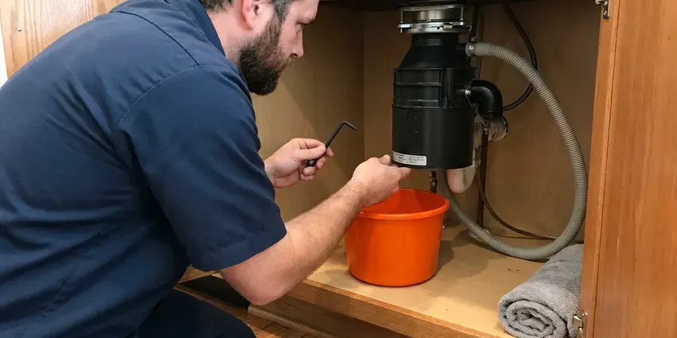

Grease Trap Repair in Winchester, NV
Our Winchester, NV team repairs indoor traps and outdoor interceptors so your kitchen stays open and ready for inspection.
- Upfront Pricing
- Local Nevada Plumbers
- Fast Commercial Service
- Licensed Plumbers
Need Grease Trap Repair for Your Business in Winchester, NV?
Call (725) 360-1766 for a repair visit and a clear explanation of what failed.
Professional Grease Trap Repair in Winchester, NV
FMR Plumbing understands the key role a functional grease trap plays in any commercial kitchen. From restaurants to cafeterias, a broken grease trap can lead to costly downtime, health code violations, and unpleasant odors. We specialize in diagnosing and repairing all common grease trap issues, ensuring your system is compliant and efficient.
Our expertise includes:
- Hydro jetting and camera inspection of grease lines
- Replace corroded or failing grease trap components.
- Diagnose and clear severe grease trap clogs.

Additional Kitchen Plumbing Services in Winchester, NV
Our kitchen plumbing services in Winchester, NV cover sinks, disposals, dishwashers, and grease traps so your kitchen keeps running without backups or leaks.



Professional garbage disposal repair, Winchester


Customers
Why Choose FMR Plumbing for Grease Trap Repair in Winchester, NV?
A malfunctioning grease trap is more than an inconvenience, since it can cause significant plumbing damage and health code violations. Our team understands the critical role these systems play in preventing Fats, Oils, and Greases (FOG) from entering the sewer lines.
- Code Compliance, We make sure all grease trap repairs meet Nevada state and local Winchester plumbing codes, preventing future issues and fines.
- Honest Advice, If a trap is beyond repair, we tell you and price out a replacement.
- Specialized Tools, Our technicians use hydro-jetting equipment and specialized cameras to accurately diagnose and resolve complex grease trap blockages.
Citywide Coverage
No matter where you are located in Winchester, our team can quickly dispatch to your property. We understand the urgency of grease trap issues and prioritize rapid response across the whole Winchester area.
Experienced Team
Our plumbing team has deep experience with all types and sizes of grease traps, from small under-sink units to large outdoor interceptors. We undergo regular training on the latest repair techniques and code updates specific to Nevada.
Safety-First Approach
We ensure that all grease trap repairs are not only effective but also comply with all local health and environmental regulations. Our methods prevent cross-contamination and ensure the safe operation of your plumbing system.
Trusted Certified Winchester Plumbing Services Professionals
At FMR Plumbing, we take pride in providing licensed, certified plumbing services throughout Winchester, NV. Backed by leading industry credentials, our experienced plumbers combine technical skill with genuine customer care. Whether it is repair, installation, or maintenance, we follow strict safety and quality standards to deliver lasting results you can trust.
Call Us Now PHCC Plumbing Contractor Recognition
PHCC Plumbing Contractor Recognition Better Business Bureau (BBB) Accreditation
Better Business Bureau (BBB) Accreditation Angi Certified Pro
Angi Certified Pro ISO 9001 Quality Management Certification
ISO 9001 Quality Management CertificationLasting Grease Trap Repair Services in Winchester, NV
Grease Trap Repair vs Replacement Cost in Winchester, NV
Simple repairs like gasket or tee replacements usually cost far less than a new trap. Major damage such as a cracked tank body, failing concrete or a badly corroded steel unit may make replacement the better value. We compare repair cost, remaining life and compliance risk for you. Older steel traps often rust through and are good candidates for upgrade. We give you options and pricing in writing so you can decide.

Flow Control Device Repair in Winchester
Hydromechanical traps rely on a flow control fitting to keep water moving at the rated speed. If this fitting is missing or clogged, the trap can be overwhelmed and grease escapes. We inspect, clean or replace flow control devices during repair visits. We also check the air intake that allows the device to work properly. Correct flow control is essential for a trap to pass inspection.
Commercial Grease Trap Repair in Winchester
For restaurants, cafeterias, and food service establishments in Winchester, a functioning grease trap is non-negotiable. We offer emergency and scheduled repairs for all commercial grease interceptors, addressing issues like clogged lines, broken baffles, or structural damage. Our team understands the high volume of FOG in commercial settings and provides robust solutions to prevent operational downtime and ensure health code compliance. We work efficiently to minimize disruption to your business.
Hydro-Jetting for Grease Trap Repair in Winchester
When traditional snaking isn't enough, hydro-jetting is our go-to method for severe grease trap blockages. This powerful technique uses high-pressure water streams to fully scour the interior of pipes and the grease trap itself, removing years of FOG buildup, scale, and debris. It's a very effective, non-invasive method that not only clears clogs but also cleans the lines, significantly reducing the likelihood of future blockages in your Winchester business.
Grease Interceptor Clog Removal in Winchester
The most common grease trap issue is a severe clog caused by accumulated fats, oils, and grease. Our plumbers in Winchester use specialized hydro-jetting equipment to fully break down and flush out stubborn blockages from grease traps and their connecting drain lines. This method is highly effective for restoring full flow and preventing immediate recurrence, much more so than chemical drain cleaners which can damage pipes.
Cost-Effective Grease Trap Solutions in Winchester, NV
At FMR Plumbing, we understand that grease trap repairs can be an unexpected expense. We provide transparent, upfront pricing for all our services in Winchester, NV, with no hidden fees. Our goal is to offer cost-effective and durable repair solutions that prevent future breakdowns, saving you money in the long run. We focus on repairs that extend the life of your existing system whenever possible, avoiding early replacement costs.
Emergency Grease Trap Services in Winchester, NV
Grease trap failures can happen at the worst possible times, leading to sudden business disruption. FMR Plumbing offers emergency grease trap repair services to address urgent issues like severe backups, overflows, or major leaks. Our quick response team in Winchester, NV is equipped to quickly diagnose and implement temporary or permanent solutions to minimize downtime and get your commercial kitchen back to operational status as fast as possible, even after hours.

Residential Grease Trap Repair in Winchester, NV
Even residential properties in Winchester, NV can benefit from a grease trap, especially those with septic systems or older plumbing. If your home's under-sink grease trap is backing up or emitting foul odors, it indicates a need for repair. We service smaller, often plastic or fiberglass, residential units, clearing blockages and fixing minor leaks to protect your home's drain lines from grease accumulation. This prevents expensive main line clogs down the road.
Grease Trap Repair Near Me in Winchester, NV
Restaurant owners searching for grease trap repair near me can rely on our local commercial team. We know the inspection standards in the area and how to meet them. Repairs are done right so you avoid recurring problems.
When you search for "grease trap repair near me" in Winchester, NV, you want a local company that understands the challenges of plumbing in the area. Water heaters in hot garages age faster, and outdoor pipes and irrigation lines take a beating from sun and heat. Temperature swings make pipes expand and contract, which can stress grease trap connections, and FMR Plumbing checks for that on every call.
FMR Plumbing at a Glance
- Fully licensed plumbing team covering Winchester, NV
- 24/7 emergency service with same-day scheduling
- Upfront, flat-rate pricing before work begins
- 4.8-star rated by 903+ Nevada customers
Winchester Map
Winchester Information
- Population
- 36,403
- Area codes
- Local
- Service area
- Winchester and communities within 40 miles
- Nearby
- Paradise, Sunrise Manor, Whitney, Spring Valley
Ground movement and weather stress grease interceptors, lids and seals, so prompt repairs keep commercial kitchens in Winchester, NV compliant and odor free. Most homes sit on concrete slabs, so leaks in buried supply lines often show up as damp areas on the floor or higher water bills.
Expert Services
Trust our professionals for reliable FMR Plumbing solutions in Winchester, NV.
Our Specialized Plumbing Services in Winchester, NV
At FMR Plumbing, we provide a complete range of plumbing services across Winchester, NV. From leak detection to full system installations, our team ensures fast, precise, and affordable service for both residential and commercial properties. Explore our core services below:


How Our Grease Trap Repair Process Works in Winchester, NV
Our grease trap repair process focuses on quick diagnosis and lasting fixes.
Request a Quote
Call (725) 360-1766 or fill out our online form to schedule your grease trap repair service. We will gather initial information about your issue and set up a convenient appointment time.
Diagnosis & Inspection
Our certified plumber will arrive on site to thoroughly inspect your grease trap and connected plumbing. We use advanced diagnostic tools to find the exact cause of the problem, whether it's a clog, leak, or component failure.
Expert Repair
Based on our diagnosis, we will explain the repair options and provide a clear, upfront estimate. Once approved, our team will perform the necessary repairs using high-quality parts and industry-best practices, ensuring a lasting solution.
Frequently Asked Questions About Grease Trap Repair in Winchester
The cost of grease trap repair in Winchester, NV can vary widely, typically ranging from $300 for minor clogs or baffle repairs to over $2,000 for extensive damage, tank replacement, or emergency services requiring hydro-jetting. Factors like the size of the trap, the severity of the issue, and accessibility all influence the final price. We provide a detailed estimate after an on-site assessment.
Key signs include slow drainage in your kitchen sinks, foul odors coming from drains or the trap itself, visible FOGs in the wastewater leaving the trap, or an overflow. If you notice any of these, it's time to call a professional for an inspection to prevent further damage or violations.
Yes, FMR Plumbing stands behind the quality of our work. All our grease trap repairs come with a warranty on both parts and labor. The specific terms of the warranty will be clearly outlined in your service agreement, giving you peace of mind.
Yes, FMR Plumbing stands behind the quality of our work. We offer a warranty on all parts and labor for grease trap repairs, giving you peace of mind. Specific warranty details will be provided at the time of service, so you know your investment is protected.
We can, but we often recommend off hours to avoid disrupting your kitchen. Emergency repairs are handled as soon as we can get there.
Many problems such as broken tees, worn gaskets and damaged lids can be repaired. Cracked tank bodies or badly corroded units typically need replacement.
Staff can replace a lid gasket on some small traps, but most repairs require plumbing knowledge and proper waste handling. Professional repair makes sure the trap meets code.
For minor repairs like clearing a clog or replacing a baffle, permits are typically not required. However, if the repair involves significant alteration to the plumbing system, relocating the trap, or replacing the entire unit, a plumbing permit from the Winchester permitting office may be necessary. We can advise you on permit requirements during our assessment.
What People Are Saying About Our Plumbing Experts?

Patricia H.
We had a slab leak that two other companies could not find. FMR Plumbing located it in under an hour, explained our options, and the price matched the quote to the dollar.
Slab Leak Repair · Sunrise Manor, NV
James P.
Our commercial plumbing system had a leak under the sink, and FMR Plumbing handled it professionally. The plumbers arrived quickly and restored everything without disruption to our customers.
Commercial Plumbing · Sunrise Manor, NV
Sofia M.
Two new toilets installed in one visit, no mess left behind, and the tech even adjusted a faucet he noticed was dripping. Fair pricing and really friendly.
Toilet Installation · Enterprise, NV
Emily R.
I called FMR Plumbing for plumbing repair, and the technician was fast, polite, and thorough. They explained the problem clearly and fixed it the same day. I will definitely hire them again. Highly recommended!
Plumbing Repair · Winchester, NV
Daniel K.
A pipe burst at 11 pm and they actually answered. The plumber showed up within the hour, shut everything down, and had us back to normal the next morning. Could not ask for more.
Emergency Plumbing · Whitney, NV
Mark T.
When our office needed drain cleaning, FMR Plumbing provided quick, reliable service. The plumber arrived on time and made sure every drain flowed perfectly before leaving. Very satisfied.
Drain Cleaning · Paradise, NV